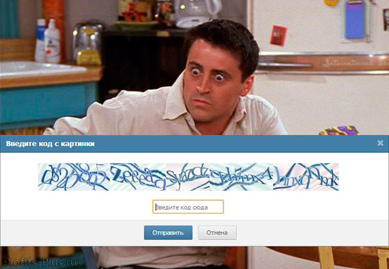
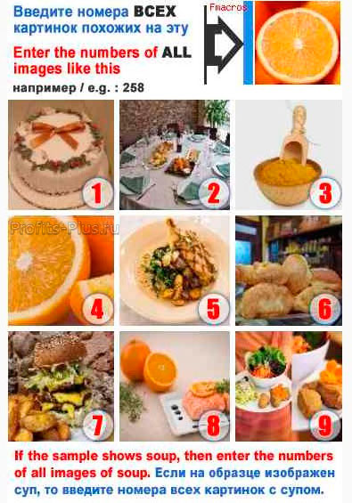
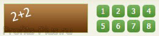

Что такое капча (captcha?)
Очень часто в интернете можно услышать такое слово как капча. Некоторые пользователи жалуются, что не могут ввести капчу, а мы даже не можем понять, о чем это они. Прочитав эту статью Вы узнаете что такое капча.
На самом деле, даже не зная что означает слово капча, каждый из нас встречается с ней постоянно. Капча — это защитный код в виде изображения. Чаще всего на сайтах нужно вводить капчу во время регистрации, отправки комментария. Или к примеру если мы сделаем несколько однотипных действий в социальной сети Вконтакте, то нас попросят ввести капчу.
Разобравшись, что такое капча, давайте ответим на следующий вопрос, зачем нужна капча? Если капча – это мера защиты, тогда от кого или чего она защищает? Как мы знаем, в интернете уже очень много программ самого разного назначения. Некоторые из этих программ помогают автоматизировать различные действия на сайтах. К примеру: оставлять спам комментарии на сайтах, добавлять друзей Вконтакте, быстро раскрутить твиттер аккаунт.
На самом деле автоматизировать можно практически любое действие человека на сайте. Но программы еще не научились считывать текст с картинок и именно поэтому на многих сайтах стали использовать капчу, в том числе и на этом. Если Вы захотите оставить комментарий к данной статье, то Вам нужно будет ввести капчу, к счастью очень легкую. То есть капча нужна для того, чтобы защитить сайт от рассылки различного спама программами.
Виды капчи
Капчи бывают самые разнообразные. Давайте разберем самые популярные виды капчи:
- Текстовая капча. В такой капче представлен набор букв, реже целое слово. Обычно на текстовой капче изображены латинские буквы (капча Вконтакте), реже встречаются буквы русского алфавита (капча от Яндекс).
- Цифровая капча. В данном виде капчи изображены различные цифры. Также очень часто капча бывает смешанная, то есть состоящая из букв и цифр.
- Образная капча. В данной капче изображены различные предметы или объекты. Для ввода такой капчи нужно выбрать опреденный предмет или группу предметов из списка. 
- Логическая капча. Данный вид капчи представлен чаще всего в виде простой математической задачки, где нужно сложить два числа и ввести сумму. Данный вид капчи использует букс SeoSprint. 

Есть еще множество разновидностей капчи, мы же с Вами рассмотрели самые распространенные, которые можно чаще всего встретить на сайтах сегодня.
Помогает ли капча в защите от спама?
На вопрос, помогает ли капча в защите от спама, ответ однозначный – капча помогает и во много раз уменьшает количество спама на сайтах. Однако не на 100%. Сейчас существуют сайты, на которых люди вручную разгадывают капчи и получают за это деньги. Программе же только остается отослать изображение капчи им и получить готовый ответ.
Это не означает, что капча утратила свою актуальность. Эти сервисы, по ручному распознанию капчи, платные. Хоть это и стоит недорого, но не все хотят платить за свои удобства и за эффективную работу. А от программ, которым не помогает человек в разгадывании капчи, она помогает хорошо.
И сложность капчи не играет особо важной роли. Так как если капчу не сможет разгадать человек, зарабатывающий на вводе капчи, то ее и не сможет ввести Ваш целевой посетитель, который не сможет ввести капчу для регистрации или отправки комментария. И если Вы читали эту статью, чтобы разобраться нужно ли ставить капчу на своем сайте, то обязательно поставьте ее, но не сильно сложную, так как в этом случае она принесет больше вреда, чем пользы.